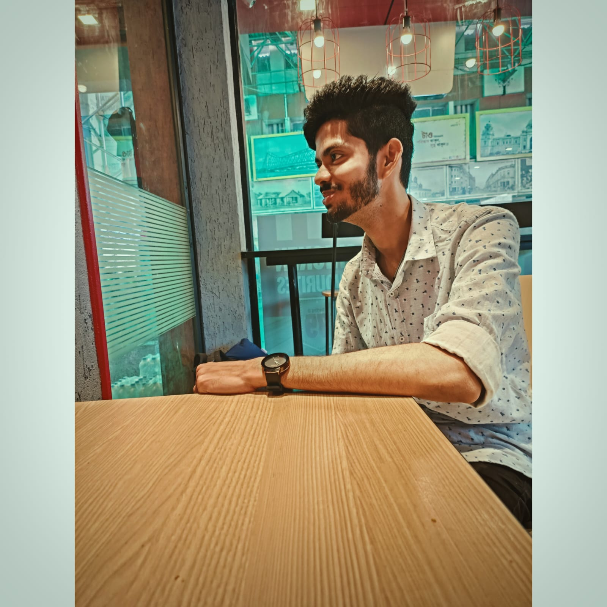

Hi, This is Soham
and I'm a proficient

My journey :

JAVA , HTML & CSS Developer (2018-2020)
As a Java, HTML, and CSS developer from 2018 to 2020, I
specialized in creating web applications and software solutions.
During this time, I contributed to the development of dynamic and
responsive web applications, leveraging my expertise in Java
programming.
Started Video Editing through CapCut & Insort (2020-2021)
From 2020 to 2021, I embarked on a journey into video editing
using CapCut and Inshorts. During this period, I explored the
intricacies of these editing platforms, exploring my skills in
crafting and visually compelling my videos. Through CapCut and
Inshorts, I gained practical experience in video editing.

Video Editing through Wondershare Filmora & Windows Movie Maker
(2021-2022)
From 2021 to 2022, I enhanced my video editing skills using
Wondershare Filmora and Windows Movie Maker. I mastered these
tools to create captivating videos with effects, transitions, and
audio enhancements.
Programming through C & C++ (2022-2023)
From 2022 to 2023, I immersed myself in programming using C and
C++, mastering the fundamentals of these languages. During this
time, I developed proficiency in writing efficient and structured
code, gaining valuable experience in software development and
problem-solving.
Data Structures & Algorithm (DSA) in JAVA (2023-2024)
From 2023 to 2024,I've been dedicated to advancing my skills in
Data Structures & Algorithms (DSA) within the Java programming
language. While I continue to learn and grow in this field, I've
gained a solid understanding of the basics of DSA. Right now I'm
going more deeply into complex concepts and practicing
problem-solving techniques to further strengthen in this area.
Professional Video Editing through Adobe(Premiere Pro & After
Effects), Filmora & DaVinci Resolve 18 (2023-24)
From 2023 to 2024, I've been actively learning and refining my
professional video editing skills. I've been exploring a range of
software, including Adobe Premiere Pro and After Effects, to
master advanced editing techniques and visual effects.
Additionally, I've been experimenting with Filmora and DaVinci
Resolve 18.
Proficient in Frontend Web Development (HTML,CSS & JS) (2023-2024)
From 2023 to 2024, I've become proficient in frontend web
development, specializing in HTML, CSS, and JavaScript. During
this period, I've dedicated myself to mastering these essential
technologies, allowing me to create responsive and visually
appealing websites. I've honed my skills in structuring web pages
with HTML, styling them with CSS, and adding interactivity and
functionality using JavaScript. As I continue to learn and grow.